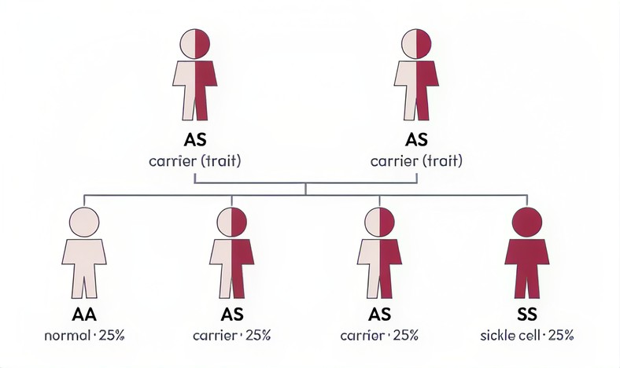
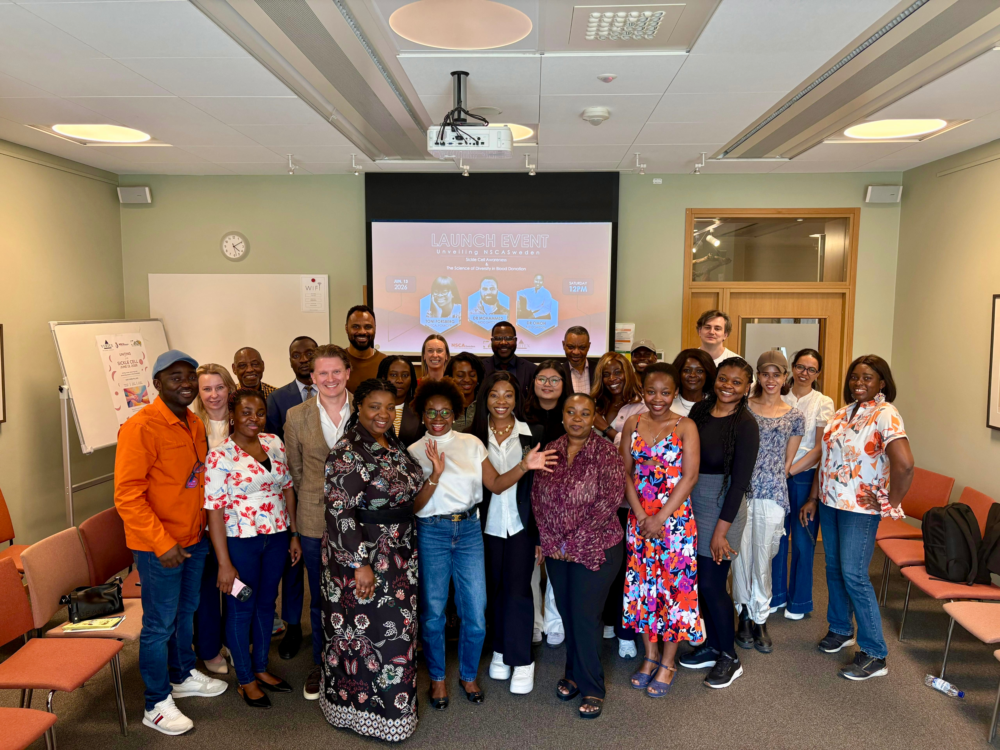
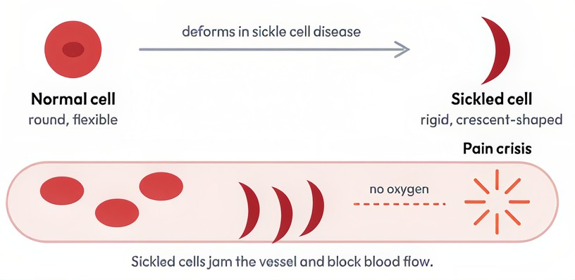
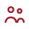
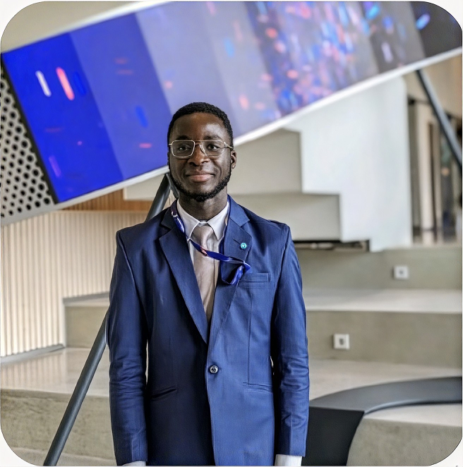
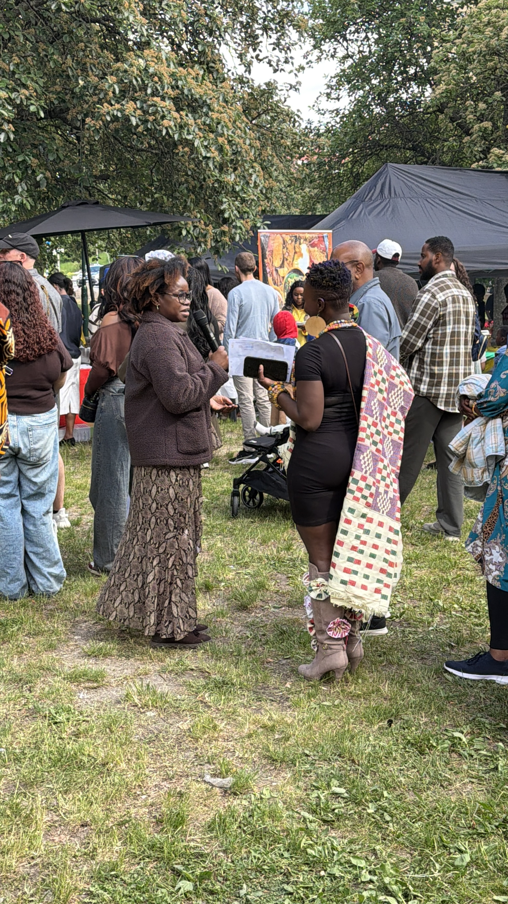
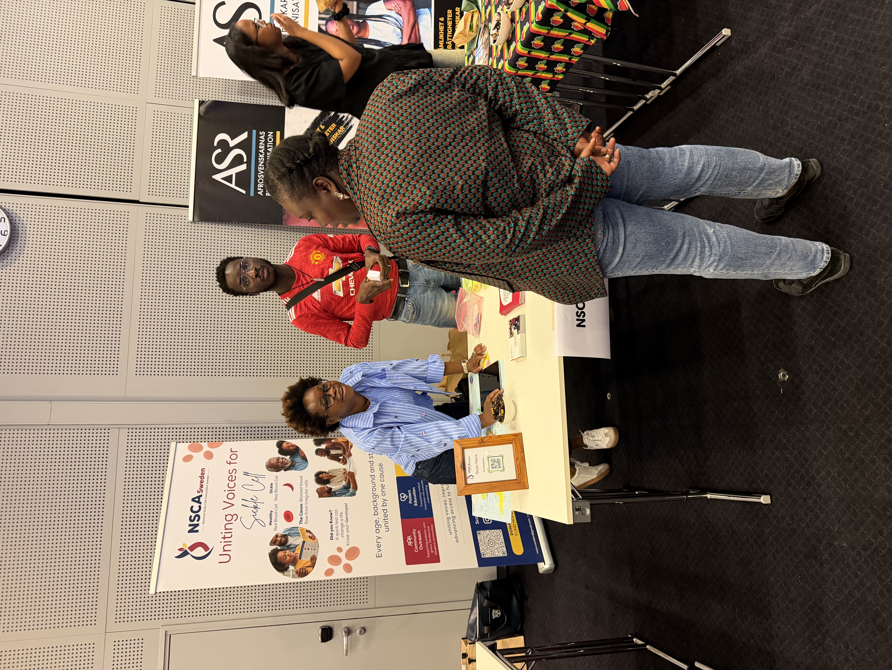
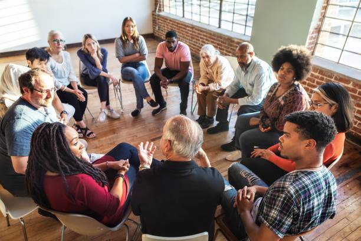

How it is inherited

A child is born with the disease when both parents pass on the changed gene. A person with one changed gene has sickle cell trait and is usually well, but can pass the gene on.
PATIENT-LED SOLIDARITY
You might live with it, raise a child, or love someone who does. Whichever it is, you are not alone anymore.
Sweden’s first patient-led organisation dedicated entirely to sickle cell disease. Launched 13 June 2026.

Sickle cell disease is a genetic blood disorder that you are born with. It is lifelong. With good care, people can live full lives.

A child is born with the disease when both parents pass on the changed gene. A person with one changed gene has sickle cell trait and is usually well, but can pass the gene on.

Red blood cells are normally round and flexible. In sickle cell disease some become stiff and crescent shaped. They can get stuck in small blood vessels and block the flow of blood and oxygen.
Sudden, severe pain called a pain crisis, deep tiredness, and a higher risk of infections. Over time it can damage organs. Every person is affected differently.
Sickle cell is most common in people of African, Middle Eastern and Southern European descent. It can affect anyone born with the gene, at any age.
START WHERE YOU ARE
Pick the one that sounds like you. Each door leads to what matters first for you.
TEENAGE TO YOUNG ADULT
Your care, your voice. Moving to adult care, school and work, and people your age who get it.
Start hereADULTS
Know your care, know your rights. Guidance for emergencies, finding the right specialist, and a member community.
Start here
PARENTS & CARERS
You don’t have to navigate this alone. First steps after diagnosis, school guidance, and other families.
Start hereFAMILY & FRIENDS
Stand beside them. Understand a crisis, give blood, and show up where it counts.
Start here
WHY THIS EXISTS
“I have lived with sickle cell disease for 45 years. And I know from experience what makes the difference. When your care is consistent, when the people around you understand your condition and you trust them, something profound shifts. You stop bracing. You start living. You build a career, raise a family, pursue the life you want, because the foundation is there. That is not a luxury. That is what good healthcare makes possible. And it is what every person with sickle cell in Sweden deserves.”
IN THEIR OWN WORDS
[PATIENT VOICE] One or two lines, exactly as they said it.
[PATIENT VOICE] One or two lines, exactly as they said it.
[LOVED ONE OR PARTNER VOICE] One or two lines, exactly as they said it.
OUR TEAM
Founder, Chairperson
Vice Chair & Treasurer

Board Member & Verifier

Secretary
HOW WE HELP
Raising awareness among the Swedish public, employers and schools, and building a peer network so no patient or family navigates the condition alone.
Equipping patients with the knowledge and resources to manage their condition with confidence, and simplifying guidance within Swedish healthcare.
Working with hospitals, government bodies and researchers to standardise care across Sweden and ensure equal access to clinical trials and emerging therapies.
GET INVOLVED
Matched blood is a lifeline for many people with sickle cell. Find out how matched blood helps and how to register as a donor.
Come to a patient circle, a seminar or an awareness event. Bring a friend, a colleague or a family member.
Add your name to a growing community. Members shape what we do next.
Work with us as an organisation. Partners support our programmes. They never decide what we say or publish.
NEWS & EVENTS · AKTIVITETER
The day Sweden's first patient-led sickle cell organisation went public.

We spoke to the community, busted myths about sickle cell, and asked everyone to do two things: give blood and know your genotype.

We met people from Ghana, Nigeria, Botswana, Jamaica, Zimbabwe, Eritrea, Somalia and Sweden, and built connections with embassies, Afrosvenska and African Professionals in Sweden.

We meet to support one another. More details to come, including the date and place.
RSVPFREQUENTLY ASKED QUESTIONS
NSCA Sweden (National Sickle Cell Association Sweden) is a patient-led, non-profit national association (riksförening). Our goal is to ensure that every person living with Sickle Cell Disease in Sweden has access to high-quality, informed, and equal healthcare.
Sickle Cell Disease (Swedish: sicklecellsjukdom or sicklecellanemi) is an inherited blood disorder. Under low-oxygen conditions, the red blood cells become rigid and take on a sickle (crescent) shape. These rigid cells can clump together and block microcirculation in capillaries, causing severe acute pain crises (smärtkriser) and tissue hypoxia.
Sickle Cell Trait (Swedish: bärare av sicklecellgenen, HbAS) means carrying only one copy of the mutated gene. Carriers are completely healthy, have a normal lifespan, and do not experience disease symptoms. Sickle Cell Disease (HbSS) is the active disease that occurs only when an individual inherits two copies of the mutated gene (one from each parent).
Blood matching requires more than just checking standard ABO and RhD groups. There are hundreds of minor antigens on red blood cells linked to geographic ancestry. Since most current blood donors in Sweden are of Scandinavian origin, patients of African, Middle Eastern, or Indian ancestry often face difficulties finding a closely matched donor, increasing their risk of severe immune reactions (alloimmunization). Diverse donors save lives.
According to Socialstyrelsen, you must have a Swedish civic number (personnummer), present valid photo identification, weigh at least 50 kg, and be between 18 and 60 years old. While completing medical assessments is necessary for clinical safety, many donation centers can accommodate English-speakers or provide support resources to assist you.
You can support the community by requesting a carrier screening from your local healthcare provider (Vårdcentral) to know your genotype, registering as a blood donor via GeBlod.nu if eligible, sharing your journey on our digital storyboard, or participating in our regional educational workshops and advocacy events.
You can find out if you carry the sickle cell gene (HbAS) or have other hemoglobin variants by requesting a blood test through your primary care doctor (Vårdcentral) in Sweden. The test is typically called physical hemoglobin analysis, often referred to as hemoglobin electrophoreses (hemoglobinelektrofores) or HPLC. Simply discuss with your physician or Vårdcentral practitioner that you wish to screen for hemoglobin variants or carrier status.